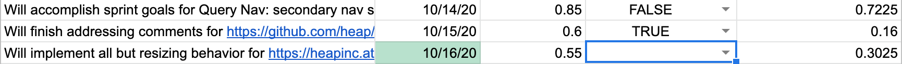
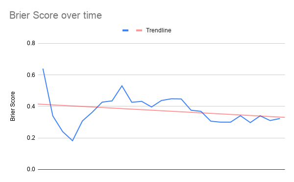
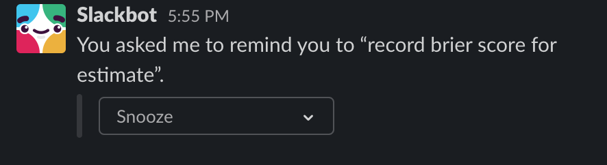

Good programmers are good at forecasting. They can often predict roughly how long it’ll take to accomplish a particular programming task. They can also predict when and to what extent a project will see ROI from a particular technical investment.
Unfortunately, this skill isn’t guaranteed to develop as we gain more experience programming. In Superforecasters, the authors note that many experienced people are surprisingly bad at making forecasts and that time and experience often don’t make us any better.
They present a framework for how to improve as a forecaster, and since I’ve started my new job, I’ve been using that framework.1 I’ve seen a small — but measurable — improvement in my forecasting ability, and I’d like to share the specifics around how I’ve used this framework to that effect. I’ll break the explanation into two parts: first, I’ll briefly explain the simple math behind the framework presented in Superforecasters. Then I’ll get into how I’m using a simple google spreadsheet and some slack reminders to track my progress within that framework.
Mathematically measuring the quality of forecasts
Forecasts, in this framework, are probabilistic predictions that a certain event will occur by a certain time. For example, I might say:
I’m 75% confident that I’ll finish programming task X by the end of the week.
Or, to take an ROI-related example:
I’m 85% confident that refactoring code in this file will facilitate future product changes within 3 months.
If the forecasted event occurs, we assign that event a 1. If it doesn’t occur, we assign it a 0. Once we do that, measuring whether a particular forecast was a good one is easy: we simply take the squared difference between our probabilistic prediction and the value we’ve assigned the event after the deadline has passed.
Continuing with the above programming task example: if I didn’t actually accomplish the task by the end of the week, the quality value we’ll give to the forecast will be:
We’re basically taking the squared error of our forecast here, so a lower value means that our forecast was actually closer to the truth.
As we make N forecasts, we can simply take the mean of the sum of the squared errors of our predictions:
This is called a “Brier score.”
My spreadsheet + reminders
I’m using a spreadsheet to apply this framework in two ways. First, it allows me to easily enter forecasts and calculate a rolling brier score from my last 10 forecasts. I’m also using it to graph my brier score over time. I’ll quickly cover how those things are working in this section.
The spreadsheet looks like this table:
| Prediction summary | Date | Confidence | Came true? | Prediction Squared Error | Brier Score |
|---|---|---|---|---|---|
| Finish programming task X | 10/31/20 | .85 | TRUE | 0.0625 | 0.0625 |
| Refactoring will facilitate product work | 1/31/20 | .75 | FALSE | 0.5625 | 0.3125 |
A few quick notes on how this works. TRUE and FALSE are encoded as 1 and 0 by Google Sheets the formula for the “Prediction Squared Error” column is a simple subtraction. Also, like I mentioned before, I’m tracking a rolling brier score of the last 10 predictions in the “Brier Score” column. I’ve also got some conditional styling setup to color a row green if it’s time fill in the actual outcome for a more long-range prediction:

Of course, it’s pretty trivial to create a graph of this. Here’s what mine looks like:

I’ve also setup some simple daily slack reminders to tell me to keep this spreadsheet updated. One reminder tells me to make predictions at the beginning of the day, the other one tells me to record whether those predictions were accurate at the end of the day:

This framework, spreadsheet, and graph together make it abundantly clear whether I’m actually improving as a forecaster/programmer, and it prompts reflection on whether I’m making the same mistakes over and over again (I recently added a notes column to each prediction so I can record why it was a good or bad prediction). I’d recommend it to anyone who’s interested in improving as a forecaster and as a programmer.
Notes:
-
When I was a PM, I also adapted the framework to work in the context of product management. ↩︎